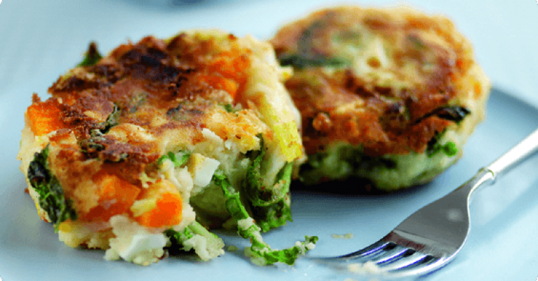
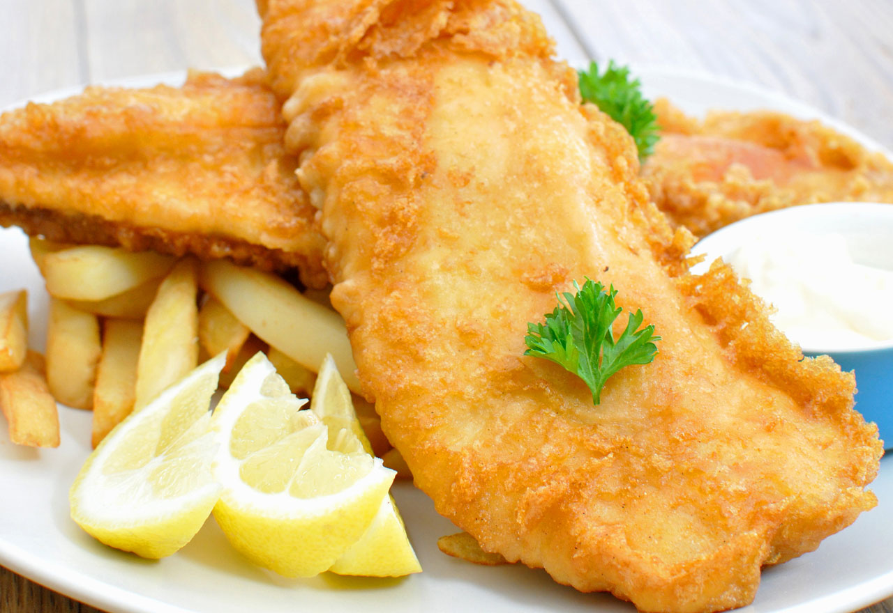
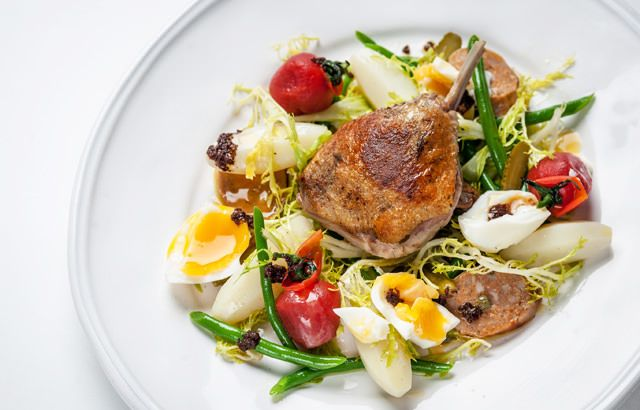
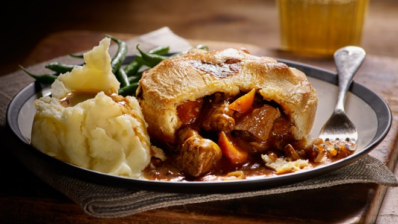

Best Restaurant
British and Chinese food served at your convenience in Buckingham Palace.
British Menu
Appetizers
Spark up your appetite with a staple British appetizer.
- Bubble and Squeak $5.25
- Fried vegetables mixed with mashed potatoes topped with an egg served sunny side up.
- Scottish Tattie Scones $4.50
- Two scones baked from a mix of potatoes, egg, and flour.
- Classic Prawn Cocktail $6.00
- Prawn dipped in a sauce made out of mayonnaise, creamed hourseradish, and ketchup elegantly placed inside a wine glass.
Fish and Chips
The most typical British dish. Choose a fish to go along with chips (fries).
- Cod $9.00
- The good old classic way to serve fish and chips. Battered Cod with a side of chips. Can include a second serving of fish for $2.00
- Pollock $10.00
- The staple Westcountry-style fish offering a sweet taste and flaky texture. Can include a second serving of fish for $2.00.
- Haddock $11.00
- A Northern fish with a sweet taste and dry texture served with a side of chips. Can include a second serving of fish for $3.00
- Skate $13.00
- Gourmet fish form France with a mild nutty flavor served with a side of chips. Can include a second serving of fish for $3.00
Salads
For a lighter dish, but with flavors common in the United Kingdom.
- Caesar Salad $6.00
- Creamy salad with croutons, eggs, and grated cheese.
- Duck Salad Lyonnaise $9.00
- Salad with duck legs, Lyonnaise sausages, black olives, and basil
- English Garden $8.00
- Salad with potatoes, cucumber, sun-dried tomatoes, and green beans covered in a mustard, honey, and mayonnaise dressing.
- Summer Salad $5.00
- Salad with peas and green beans covered in olive oil and a bit of parsley. For the green lover!
Meat Pies
The typical dessert favored by many in Great Britain.
- Turkey Pot Pie $5.00
- Pie filled with turkey, onions and eggs.
- Beef and Potato Pie $7.00
- Pie filled with beaf, potatoes, Worcestershire sauce, and onions.
- Stake and Ale Pie $8.00
- Pie filled with braising steak, brown ale, onions, and chestnut mushrooms.
- Leak and Lamb Pie $7.50
- Pie filled with leeks, leg of lamb, and eggs.
Chinese Menu
Pick 1 appetizer, 2 entrées, and 2 deserts. All combinations are $25
Appetizers
- Egg Drop Soup
- Tea Egg
- Birds Nest Soup
- Winter Melon Soup
- Fried Rice
- Lamian
Entrées
- Kung Pao Chicken
- Peking Duck
- Pickled Vegetables
- Congee
- Oyster Omelette
- Soy Egg
- Zongzi
Desserts
- Mooncake
- Sachima
- Tong Sui
- Pandan Cake
- Egg Tart